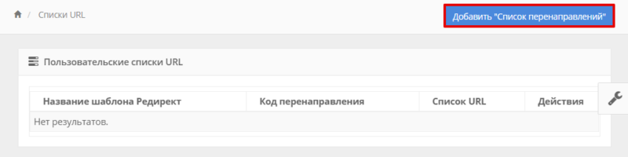

Редиректы
Виды редиректов
Редирект для домена — перенаправление с одного адреса (домена) на другой. Подробнее об этой функции на DomainParking.ru читайте в статье.
Существует 2 типа редиректа.
301-й редирект (код ответа браузера 301 moved permanently) - расценивается поисковыми системами как постоянный редирект и происходит "склеивание" доменов, и все показатели "склеенных" доменов для поисковых систем объединяются.
Доступен 301-й редирект исключительно на шаблонах "Пользовательский редирект".
302-й редирект (код ответа браузера 302 temporary redirect) - временное перенаправление и "склеивание" не происходит. Таким образом ваш домен поисковики воспринимают как самостоятельную единицу, и, в случае если вы решите сделать на нем сайт или продать, то вам не придется ждать пока поисковики "расклеят" домены, что может длиться более месяца.
Доступен 302-й редирект как на на шаблоне "Базовый редирект", так и на шаблонах "Пользовательский редирект".
Исходя из этого приходим к выводу, что 302 редирект не подойдет для следующих ситуаций:
- склейка домена с сайтом для передачи ему SEO параметров;
- перенаправление пользователей со старого домена на новый.
Упрощенное добавление редиректа
Теперь редиректы можно добавить массово, указав список доменов и одну общую цель для всех добавляемых доменов.
При необходимости, вы можете указать категорию или иной шаблон из пользовательских редиректов, а также загрузить список доменов с настройками из файла.
Добавление редиректа из файла
Теперь редиректы можно добавить из текстового файла в формате обычных шаблонов:
site1.ru::rd_0:0:: http://site2.ru - для базового редиректа (rd_0)
site1.ru::rd_7:0:: http://site22.ru - для пользовательского редиректа (rd_7) номер можно узнать в адресной строке браузера:
Или сделав бекап доменов в Настройках аккаунта и скачав его в Отчетах.
Поддерживается так же упрощенный формат, который был доступен в старой версии редиректов:
site1.ru|site2.ru
где site1.ru - домен с которого будет идти редирект, site2.ru - цель редиректа (домен, на который будем перенаправлять), "|" - разделитель.
Например:
После добавления записи смените DNS-серверы перенаправляемого домена (site1.ru) на новые: ns1.domainparking.ru и ns2.domainparking.ru.
Готово! Через 2-6 часов парковка будет перенаправлять посетителей на целевой сайт.
Как настроить шаблон «Базовый редирект»
Шаблон «Базовый редирект» подойдет в случаях, когда нужно, чтобы один/несколько доменов вели на другой целевой адрес. Мы сделали эту процедуру проще. Теперь редиректы на один адрес можно настраивать массово
Чтобы настроить шаблон «Базовый редирект»:
- Авторизуйтесь в личном кабинете.
- Перейдите в раздел Настройки.
- Введите целевой адрес с https:// в графе URL для шаблона «Редирект»: По умолчанию редирект настроен на адрес https://domainparking.ru.
- Нажмите Сохранить ниже.
Готово! Этот редирект будет использоваться в качестве шаблона
Базовый редирект
Далее вам нужно подключить редирект к одному/нескольким доменам. Для этого:
- Перейдите в раздел Припаркованные домены.
- В строке домена/доменов, с которых должно идти перенаправление на целевой адрес в столбце «Шаблон» установите Базовый редирект:
Готово! Выбранные домены будут вести на адрес, установленный в: URL для шаблона.
Все домены c редиректами отображаются во вкладке
Редиректы:
Для каждого домена на базовом редиректе можно добавить индивидуальный URL. Если домен переключить на другой шаблон, этот URL будет использоваться и в шаблоне SALE (как ссылка на второй кнопке шаблона) и в шаблоне iFrame.
Как настроить пользовательский шаблон редиректов?
Пользовательский шаблон редиректов подойдет для более гибкой настройки редиректов. Создав пользовательский шаблон, вы сможете настроить типы редиректа (301 — постоянный или 302 — временный) и несколько адресов, который поочередно будут открываться при переходе на домен. Также вы сможете установить приоритеты для них.
Пользовательские шаблоны можно использовать для А/Б-тестирований.
Чтобы создать пользовательский шаблон:
- Перейдите в новый раздел Списки URL.
- Нажмите Добавить “Список перенаправлений”:
- Введите название шаблона, поставьте галочку напротив Навечно, если хотите сделать постоянный редирект (301) или снимите галочку, если хотите настроить временный редирект (302). Временный редирект подходит для случаев, когда вы устанавливаете несколько целевых сайтов для перенаправления. Введите несколько URL-адрес с https://, выставьте приоритет (чем больше число, тем чаще будет открываться именно этот адрес) и нажмите Добавить:
Готово! Шаблон редиректа появится в разделе. Теперь вы можете подключить его к доменам в разделе Припаркованные домены:
Пользовательские редиректы можно использовать для того, чтобы направить отдельную группу доменов на один URL и собирать отдельную статистику по этой группе доменов в разделе Статистика/Шаблоны. Также они используются для быстрой смены URL.
Добавление доменов с редиректами в Магазин доменов
- Перейдите в раздел Припаркованные домены.
- Перейдите в настройки нужного домена.
- В блоке Шаблон установите «Базовый редирект» и нажмите Сохранить: Здесь же вы можете установить другой целевой URL для отдельного домена.
- Левее поставьте галочку напротив пункта Участвует в продаже. Здесь же вы можете добавить описание, заголовок и цену доменов с редиректами. Сохраните изменения:
Готово! Вы выставили домен с редиректом в Магазине доменов.
Как узнать статистику редиректов
Посещения по редиректам отображается в разделе Статистика в одноименной вкладке:
Также вы можете перейти во вкладку Шаблоны и посмотреть посещения по конкретному шаблону редиректов: